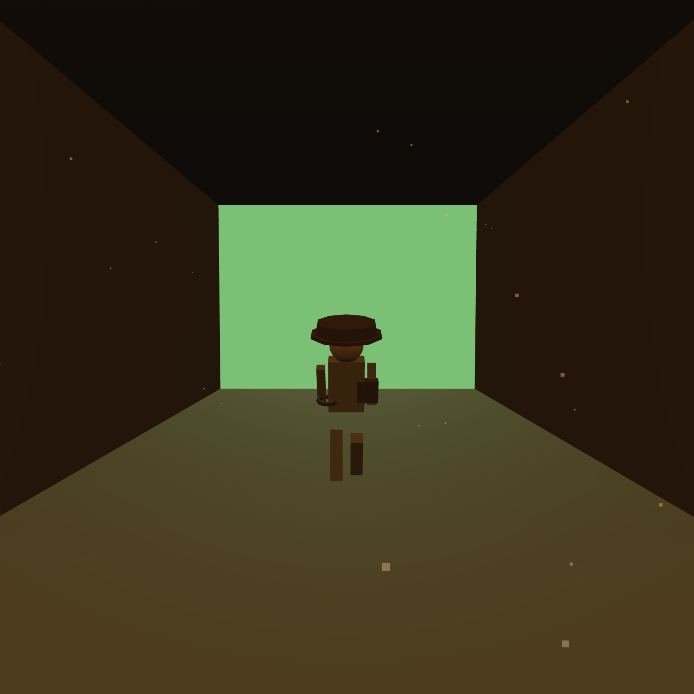
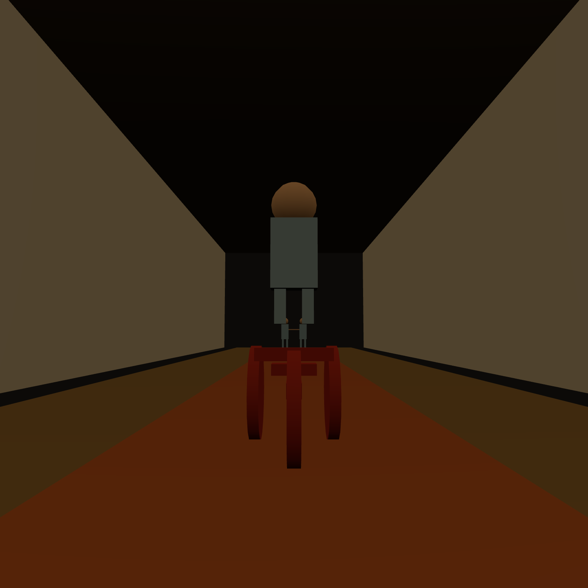
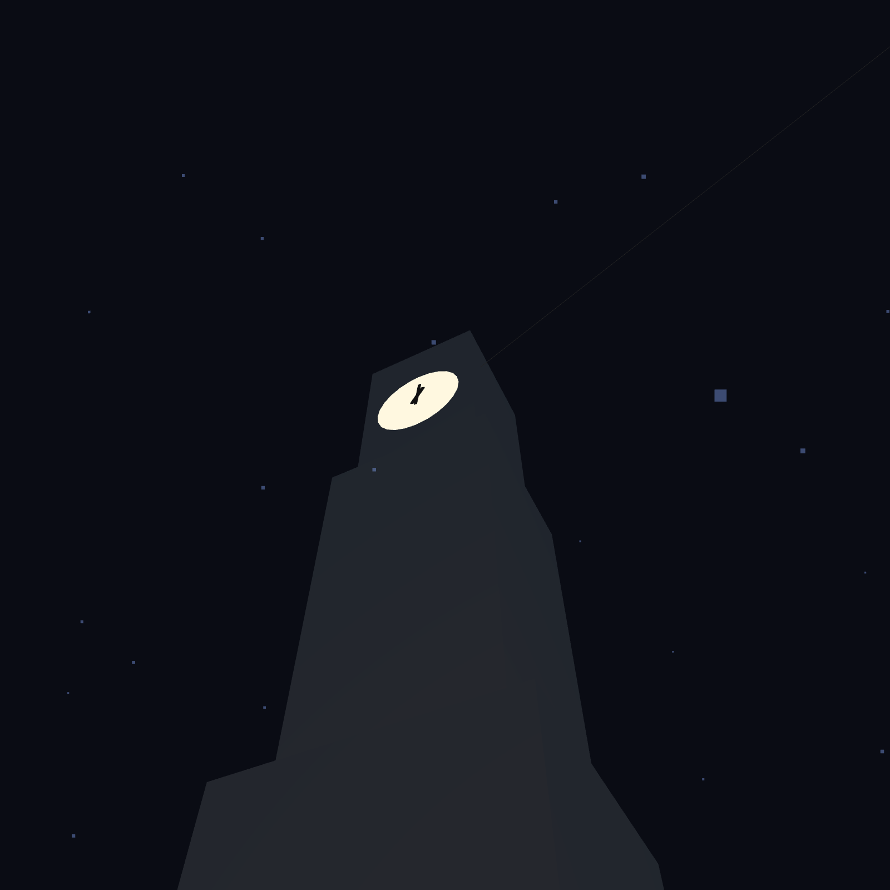
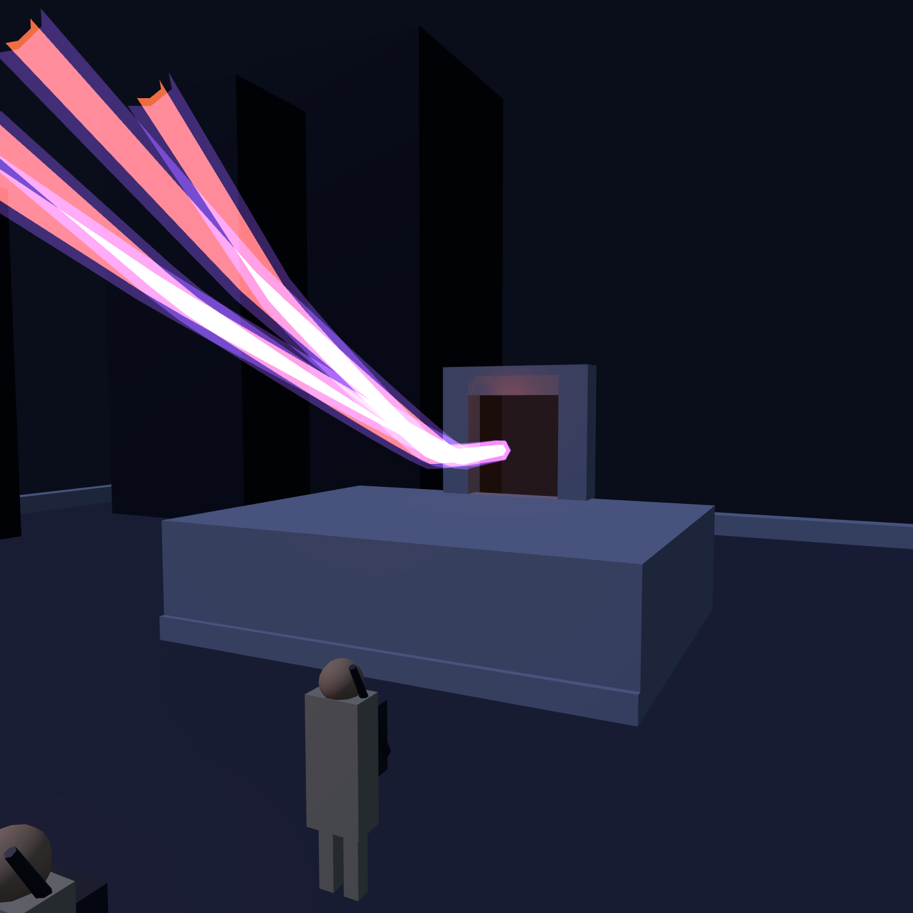
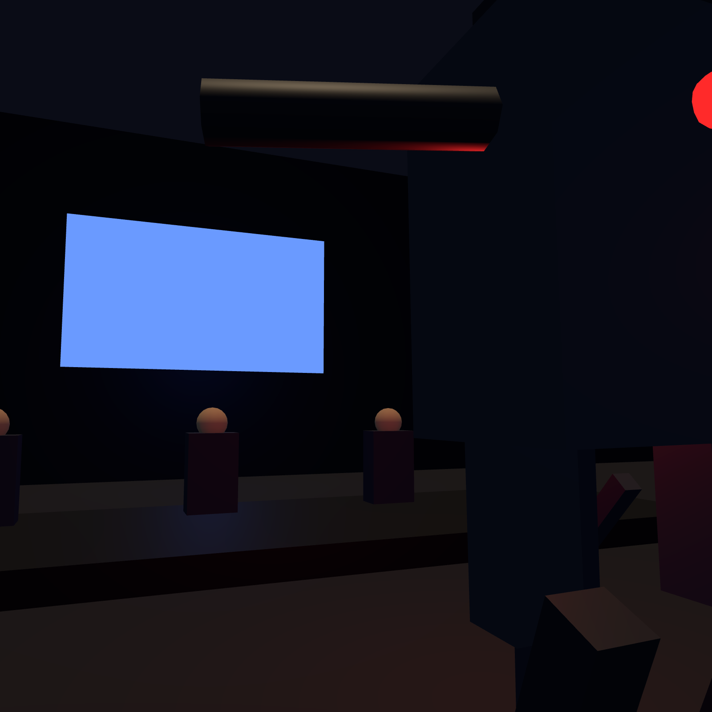

Iconic Movie Moments, Rebuilt in Three.js
Six delivered scene rebuilds. Every entry is a single self-contained offline HTML (Three.js r185, no CDN, no runtime fetch), geometric silhouettes only, an original Web Audio score, deterministic renderAt(seconds), and a full sources.md provenance file.

Outrun the Boulder
Raiders of the Lost Ark (1981)

Two Girls at the End of the Hall
The Shining (1980)

Eighty-Eight at 10:04
Back to the Future (1985)

Cross the Streams
Ghostbusters (1984)

Directive Failure
RoboCop (1987)

The Moon Shot
E.T. the Extra-Terrestrial (1982)
Want your iconic scene rebuilt?
20–45s offline scene, original score, sources.md + concept note + screenshots, delivered by email in 5–7 days.
Order a scene rebuild — €49 Or get the build toolkit — €19All geometry authored from primitives; no likenesses, no ripped assets, no traced frames, no film audio. Each entry ships with provenance docs. See the build write-up.
← Back to store